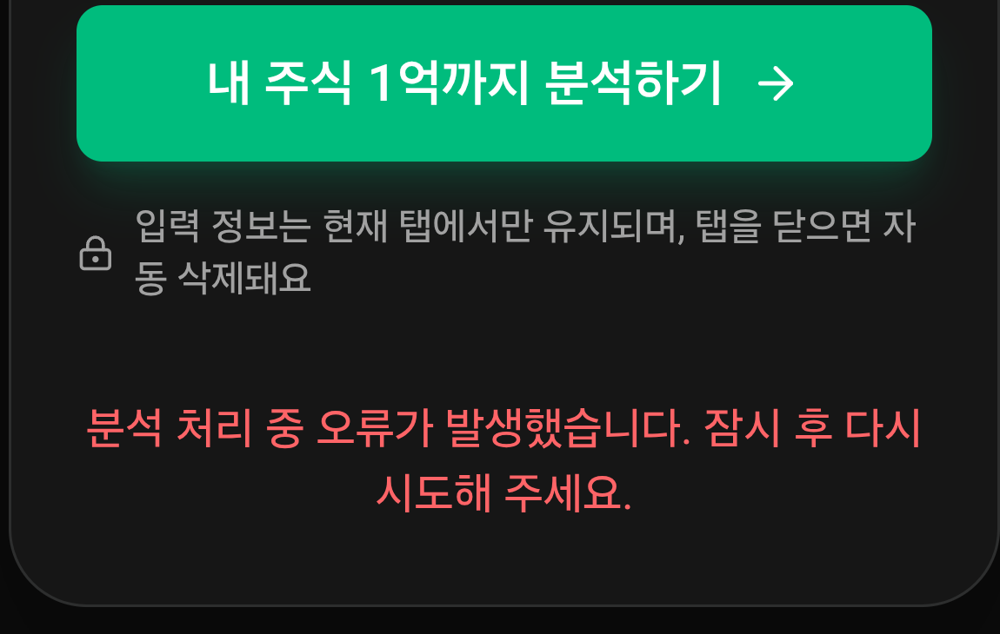
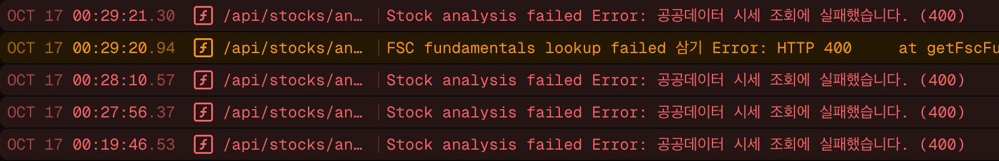

빠른 분석
종목과 평균 매수가·수량만 입력하면 현재 수익률과 목표 도달 시나리오를 빠르게 확인합니다. 로그인 없이 시작할 수 있고, 종목명·티커 자동완성으로 입력 부담을 줄였습니다.

대표 프로젝트 · 개인 풀스택 개발
“이대로 계속 투자하면, 언제쯤 얼마가 될까?”
과거 투자 데이터를 여러 시나리오로 풀어내어,
막연한 미래를 조금 더 구체적으로 바라보게 돕는 서비스입니다.


직접 주식 투자를 하면서 궁금했습니다. 지금처럼 계속 투자하면, 언제쯤 얼마가 될까? 함께 주식을 하는 어머니와 동생도 앞으로의 수익을 가늠하기 어려워, 투자를 꾸준히 이어가는 것이 맞는지 불확실해했습니다.
발견한 문제는 단순히 계산기가 없다는 것이 아니었습니다. 현재의 투자와 장기 목표 사이를 연결해서 보기 어렵다는 점이었습니다. 과거 데이터를 바탕으로 앞으로 가능한 흐름을 시나리오로 살펴볼 수 있다면, 막연한 불안 대신 미래의 윤곽을 그릴 수 있겠다고 생각했습니다.
그래서 보유 주식과 목표 금액을 입력하면 현재 상태와 여러 성장 시나리오를 함께 보여주는 EOKKA를 만들었습니다. 하나의 결과를 확정적으로 예측하기보다, 가정에 따라 달라지는 경로를 비교하고 자신의 투자 방향을 돌아보도록 구성했습니다.
종목과 평균 매수가·수량만 입력하면 현재 수익률과 목표 도달 시나리오를 빠르게 확인합니다. 로그인 없이 시작할 수 있고, 종목명·티커 자동완성으로 입력 부담을 줄였습니다.
분석한 기록을 자산·손익 추이로 연결해 투자 흐름을 한눈에 보여줍니다. 개별 분석 결과를 넘어, 시간에 따라 무엇이 달라졌는지 돌아볼 수 있게 했습니다.
분석 기록에서 얻은 기간별 성과와 투자 패턴을 카드와 친근한 설명으로 풀어냈습니다. 숫자를 나열하기보다 주간·월간·연간 흐름을 재미있게 읽고 이해하도록 구성했습니다.

분석 기록과 투자 목표를 작은 성취로 연결합니다. 당장의 수익률뿐 아니라 기록을 쌓는 과정에서도 목표의식과 꾸준히 참여할 동기를 얻도록 만들었습니다.

문제. 페이지 이동마다 화면 전체가 로딩되고, 분석을 저장한 후에는 일부 화면에 이전 값이 남았습니다.
개선 방향. 화면 전체를 가리는 대신 데이터 영역에 스켈레톤을 표시하고, 이미 조회한 데이터는 재사용하도록 했습니다. 다만 분석을 저장한 뒤에도 이전 값이 남지 않도록, 관련 화면의 캐시를 무효화하고 다시 조회하는 조건이 필요했습니다.
구현과 동작 확인. React Router의 loader로 데이터를 조회하던 중, 반복 조회를 줄이기 위해 캐싱을 떠올렸고 AI의 도움으로 구현했습니다. 캐시가 의도대로 동작하는지 테스트한 뒤 정상 동작을 확인하고 다음 작업으로 넘어갔습니다.
서버에서 받은 데이터를 화면에 표시하고 캐시에 등록
사용 가능한 캐시가 있으면 서버 조회 대신 재사용
대시보드·기록·인사이트 등 관련 캐시를 무효화해 다음 조회에서 갱신
처음 AI와 개발하며 놓친 점. 그동안 학습한 지식을 바탕으로, 처음 Codex를 도입해 실제 서비스를 만들어 보고자 했습니다. 예상보다 기능을 잘 구현해 주자 점차 결과를 신뢰하게 됐고, 구현 과정까지 검증해야 한다는 필요성을 덜 느끼게 됐습니다. 이후 코드를 다시 살펴보니 React Query가 아닌 Map 기반 자체 캐시가 구현되어 있어 당황했습니다. 자체 구현의 잘못이 아니라, AI 활용에 익숙하지 않아 구현 방식과 선택 근거를 확인하지 않은 채 동작 검증에 그쳤던 제 작업 방식의 한계였습니다.
배운 점과 다음 기준. AI가 기능을 완성해 주더라도 구현을 이해하고 판단하는 책임은 개발자에게 있다는 점을 배웠습니다. 앞으로는 구현 전 접근 방식과 선택 근거를 확인하고, 라이브러리 활용과 직접 구현의 유지보수 부담을 비교한 뒤 코드 검토와 테스트를 함께 진행하려고 합니다. 이 경험은 AI 활용과 AX를 공부하며, 개발 과정에 AI를 도입하고 검증하는 방법을 체계적으로 익히겠다고 다짐한 계기가 됐습니다.
페이지 데이터 캐싱·스켈레톤 최초 구현 커밋 ↗문제와 초기 확인. 배포 후 사용자 테스트에서 분석이 실패했습니다. 운영 로그에 ‘공공데이터 시세 조회 실패(400)’가 반복되어 환경변수와 API 키가 정상인지 먼저 확인했지만, 설정에 문제가 없는데도 오류가 계속됐습니다.


AI와 원인 추적. 로그를 바탕으로 AI의 도움을 받아 원인을 좁혀 가며, 오류·성능 모니터링 도구인 Sentry가 외부 요청에 추적 헤더를 추가한다는 점을 알게 됐습니다. 같은 키와 요청 조건에서 헤더 유무를 비교한 결과, 추적 헤더 없음 → 200 / 추적 헤더 있음 → 400으로 갈렸습니다. 외부 API가 sentry-trace·baggage 헤더가 포함된 요청을 거부하는 문제였습니다.
수정과 검증. 서버 Sentry는 tracePropagationTargets 설정을 생략하면 기본적으로 추적 헤더를 전파합니다. 이를 빈 배열([])로 지정해 전파 대상을 없애고, 외부 API 요청에 추적 헤더가 추가되지 않도록 했습니다. 오류 수집은 유지했으며, 재배포 후 운영 서비스의 ETF 분석이 200 응답으로 성공하는 것을 확인했습니다.
처음에는 한국투자증권 API로 국내·미국 주식을 분석하려 했습니다. 그러나 개인용 시세를 제3자에게 제공하는 제약 때문에 해당 모드를 공개 서비스에서 그대로 사용할 수 없었습니다. 운영은 금융위원회 주식·증권상품 시세 API를 사용하도록 전환하고, KIS 모드는 로컬 테스트 용도로 남겨 프로덕션 실행을 차단했습니다.
이에 맞춰 베타 서비스의 지원 범위를 국내 주식·ETF·ETN과 확정 종가 기반 분석으로 명확히 안내했습니다. 원하는 기능을 모두 노출하기보다 실제 제공 가능한 데이터 범위에 맞춰 제품을 조정했습니다.
배경. 이메일의 링크를 눌러 로그인하는 매직 링크에 서비스 전용 디자인을 적용하고 싶었습니다. Supabase Auth의 기본 발송 흐름 대신 React Email 템플릿을 렌더링해 Resend API로 보내도록 확장했습니다. Supabase에서 매직 링크나 템플릿을 지원하지 않는다는 뜻이 아니라, 코드로 관리하는 이메일 생성·발송 흐름을 연결한 것입니다.
구현 과정. 로그인 화면에서 Supabase Auth에 매직 링크 발송을 요청하면, Auth의 Send Email Hook이 Edge Function을 호출합니다. 함수는 요청 서명을 확인하고 전달받은 토큰 해시로 인증 링크를 구성합니다. 이 링크를 React Email 템플릿에 넣어 HTML로 만든 뒤 Resend API로 발송하도록 연결했습니다.
역할 분리. 사용자가 메일의 링크를 누르면 앱의 인증 경로에서 Supabase Auth로 토큰을 검증하고 세션을 생성합니다. 인증은 Supabase Auth에 맡기고, 이메일 내용 구성과 발송은 Edge Function·Resend가 담당하도록 나눴습니다.

종목명이나 종목코드를 입력하면 관련 종목을 목록으로 보여주고, 선택한 종목을 분석 입력에 반영하도록 했습니다. 정확한 종목코드를 외워 입력하거나 따로 찾아볼 필요 없이, 원하는 종목을 빠르게 선택할 수 있도록 추가한 기능입니다.
구현 방식. 글자를 입력할 때마다 요청하지 않고, 입력이 멈춘 뒤 250ms를 기다리는 디바운스를 적용해 불필요한 검색 요청을 줄였습니다. 검색어가 바뀌면 AbortController로 이전 요청을 취소하고, 요청 ID도 비교해 늦게 도착한 이전 검색 결과가 현재 목록을 덮지 않도록 했습니다.
마우스뿐 아니라 방향키로 목록을 탐색하고 Enter로 선택할 수 있어, 키보드만으로도 입력을 이어갈 수 있습니다.
종목 검색 자동완성 구현 커밋 ↗알림을 읽었을 때 바로 반응하도록, 이전에 학습했던 Optimistic UI(낙관적 UI)를 떠올려 적용했습니다. 서버 응답을 기다리기 전에 성공을 가정해 읽음 상태와 읽지 않은 개수를 먼저 갱신하여, 사용자가 처리 결과를 즉시 확인할 수 있도록 했습니다.
구현 방식. 화면 상태를 먼저 변경한 뒤 useFetcher로 서버에 읽음 처리를 요청합니다. 서버가 실패 응답을 반환하면 변경한 상태와 개수를 이전 값으로 되돌리고 오류를 안내하도록 구성했습니다. 빠른 반응뿐 아니라, 저장에 실패했을 때 화면과 서버의 상태가 어긋나지 않도록 복구하는 과정도 함께 고려했습니다.
1년 미만 수익률을 무리하게 연환산하던 문제를 발견해 365일 이상일 때만 연평균 수익률을 제공하도록 바꿨습니다. 누적 수익률과 ‘1년 기록 필요’를 구분하고, 비교할 기록이 없을 때는 ‘비교 준비 중’으로 안내했습니다.
연평균 수익률 기준·안내 개선 커밋 ↗Supaplate 템플릿의 React Router 구조를 바탕으로 개발했습니다. loader는 데이터 조회, action은 변경 요청에 사용하고, 페이지 이동 없이 처리할 알림 읽음에는 useFetcher를 연결했습니다.
주식·거래·분석 결과의 형태를 타입으로 표현한 코드를 활용했습니다. 타입 정보와 자동완성을 통해 데이터 구조를 파악하며 개발했습니다. 타입 검사와 실제 입력값 검증은 별개의 과정입니다.
1인 개발에서 인증 구축 부담을 줄이고, 사용자·거래·분석 기록의 관계를 PostgreSQL로 관리했습니다. RLS로 사용자별 데이터 접근 범위를 제한했습니다.
템플릿에 포함된 Drizzle을 사용해 TypeScript 코드로 DB 스키마와 조회를 다뤘습니다. 스키마 변경은 마이그레이션 파일로 관리하는 구조를 활용했습니다.
조회·변경은 React Router의 loader/action과 useFetcher, 입력·모달은 useState, 재방문 데이터는 공통 메모리 캐시로 처리했습니다. 이후 AI가 작성한 코드를 살펴보며, 이전에 학습했던 Recoil·Redux 같은 전역 상태 관리 라이브러리 없이 알림 동기화와 캐시 공유가 구현돼 있다는 점을 뒤늦게 알게 됐습니다.
라이브러리를 사용하지 않은 것 자체가 문제는 아니지만, 상태를 어디에 저장하고 어떻게 공유하는지 충분히 확인하지 못했다는 점을 돌아봤습니다.
다음 학습 목표. 최근 실무에서 Zustand·Jotai를 활용한다는 이야기를 듣고, 두 도구를 다음 학습 목표로 정했습니다. 기존에 배운 Recoil·Redux와 상태를 구성하고 공유하는 방식, 사용 편의성, 유지보수 측면을 비교하며 어떤 상황에서 Zustand·Jotai가 더 선호되는지 알아볼 계획입니다. 다음 프로젝트에서는 직접 적용해 보며 프로젝트에 맞는 도구를 선택하는 기준을 쌓고자 합니다.
투자 입력·분석·기록·도전과제의 사용자 흐름과 개선 우선순위는 직접 정했습니다. 초기 구성에는 React Router·Supabase 기반 풀스택 웹 개발 템플릿인 Supaplate를 사용했고, 기능 구현과 코드 검토에는 Codex를 활용했습니다.
구현 결과는 직접 사용하며 확인했습니다. 짧은 기간의 수익률이 과도하게 연환산되는 문제를 발견하고 표시 기준을 바꾸는 등, 계산 결과가 실제 사용자에게 어떻게 전달되는지도 살펴봤습니다. 모든 내부 구현을 직접 설계한 것은 아니며, 캐시와 상태 관리 방식은 뒤늦게 확인하며 검토 범위의 한계를 배웠습니다.
테스트 코드 작성 경험이 없던 상태에서, AI가 작성한 캐시 테스트와 실행 결과를 살펴보며 단위 테스트를 처음 접했습니다. 이전 데이터를 저장하고 캐시를 무효화한 뒤 새 값이 반환되는지, 관계없는 캐시는 유지되는지를 기대값과 비교하는 방식입니다.
이는 캐시 함수의 동작을 확인하는 테스트이며, 실제 브라우저에서 분석 저장부터 화면 갱신까지 모두 검증한 것은 아닙니다. 테스트 통과와 구현 방식에 대한 이해를 구분해야 한다는 점을 배웠습니다.
인증·보안·외부 연동의 구현 근거는 필요한 항목을 펼쳐 확인할 수 있습니다.
이메일 로그인·회원가입·매직 링크 요청에 Cloudflare Turnstile을 연결하는 코드를 구현했습니다. 사이트 키가 설정된 환경에서 CAPTCHA 응답을 폼의 captchaToken으로 받고, 서버 action에서 토큰 누락을 확인한 뒤 Supabase Auth에 전달하는 구조입니다. 인증 시도 후에는 위젯을 초기화하고 만료된 토큰을 갱신하도록 구성했습니다.
CAPTCHA에만 의존하지 않고 인증 메일 요청을 IP 기준 분당 5회로 제한했습니다. 운영에서는 IP 원문 대신 해시와 시간 구간별 카운터를 DB에 저장해 서버리스 인스턴스가 달라도 제한을 공유합니다. 초과 시 429와 Retry-After를 반환하며, DB 장애 시에는 현재 인스턴스의 메모리 제한으로 보완합니다.
Supabase의 RLS로 사용자별 데이터 접근을 제한하고, 서버 loader/action에서도 로그인·데이터 소유자·관리자 권한을 확인했습니다. 관리자 권한은 사용자가 수정할 수 있는 프로필 정보가 아니라 별도 관리자 테이블의 사용자 UUID로 판단합니다. DB 비밀키와 외부 API 키는 서버 전용 코드에서 다룹니다.
배포 후 사용자가 어떤 기능을 이용하고 어디에서 흐름이 끊기는지 확인할 수 있도록 Google Tag Manager와 Google Analytics를 설정했습니다. 페이지 이동과 가입·로그인·빠른 분석 완료·정밀 분석 완료 등의 이벤트를 dataLayer에 전달해 GA4 리포트에서 살펴볼 기반을 마련했습니다.
이벤트 이름은 TypeScript에서 공통 관리하고, 페이지 조회에는 쿼리 문자열을 제외해 인증 관련 정보 등이 측정 데이터에 섞이지 않도록 했습니다.
브라우저와 서버에 Sentry를 연결하고 환경·릴리스 정보로 배포별 오류를 구분했습니다. 오류 발생 시 세션 리플레이를 수집하되 텍스트를 마스킹하고 미디어를 차단했으며, 요청 데이터·쿠키와 URL 쿼리를 제거하도록 설정했습니다. 실제 배포 후 분석 오류도 외부 요청 로그와 대조하며 추적했습니다.
유료 서비스의 전체 흐름을 경험하기 위해 Toss Payments 기반 카드 등록·정기결제·구독 상태·결제 내역을 구현하고 테스트했습니다. 빌링키 암호화, 결제 결과와 권한의 트랜잭션 처리, 중복 처리 방지 등 결제 이후의 데이터 일관성도 다뤘습니다.
다만 투자 관련 서비스의 결제 도입 제약과 사업자·결제 심사 준비 조건 때문에 실제 유료 운영에는 연결하지 않았습니다. 현재는 PAYMENTS_ENABLED=false로 결제 진입을 막고 무료 베타 체험으로 제공하며, 향후 조건을 갖췄을 때 검토할 수 있도록 구현을 보존했습니다. 테스트 환경의 확인과 운영 실결제 승인은 구분했습니다.
서비스를 완성하고 가족과 지인에게 소개해 실제로 사용해 보도록 했습니다. 주식 투자를 하는 지인은 도전과제를 달성하고 싶어 투자를 더 꾸준히 이어가고 싶은 의욕이 생겼다고 했고, 빠른 분석이 편리하다는 반응도 받았습니다.

가족들도 시나리오를 통해 앞으로의 자산 흐름을 간접적으로 살펴보며, 장기 투자를 이어갈 용기를 얻었다고 했습니다. 처음 해결하고 싶었던 불확실함에 대해 작은 답을 줄 수 있었습니다.
이 피드백은 수익 개선이나 장기 행동 변화가 검증됐다는 의미는 아닙니다. 다만 복잡한 데이터를 이해 가능한 경험으로 바꾸는 일이 사용자의 마음과 행동 의지에 영향을 줄 수 있다는 점을 배웠습니다.